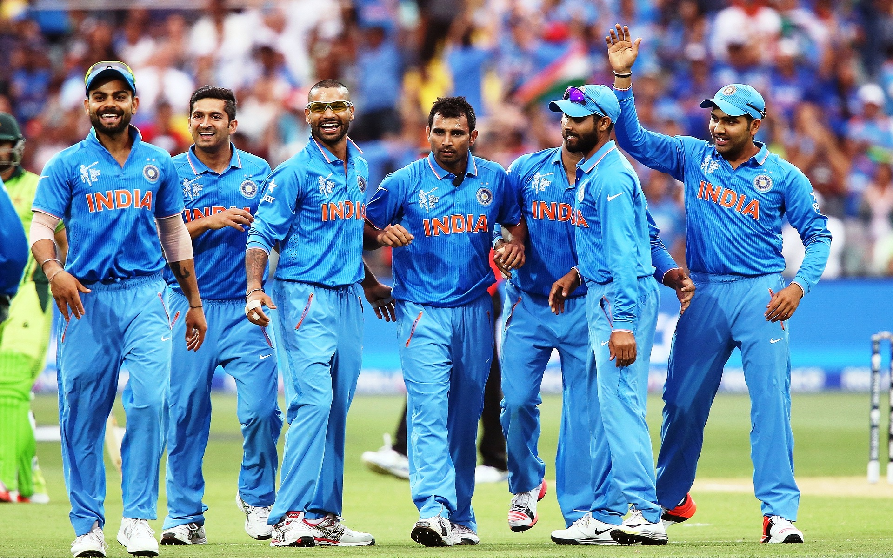
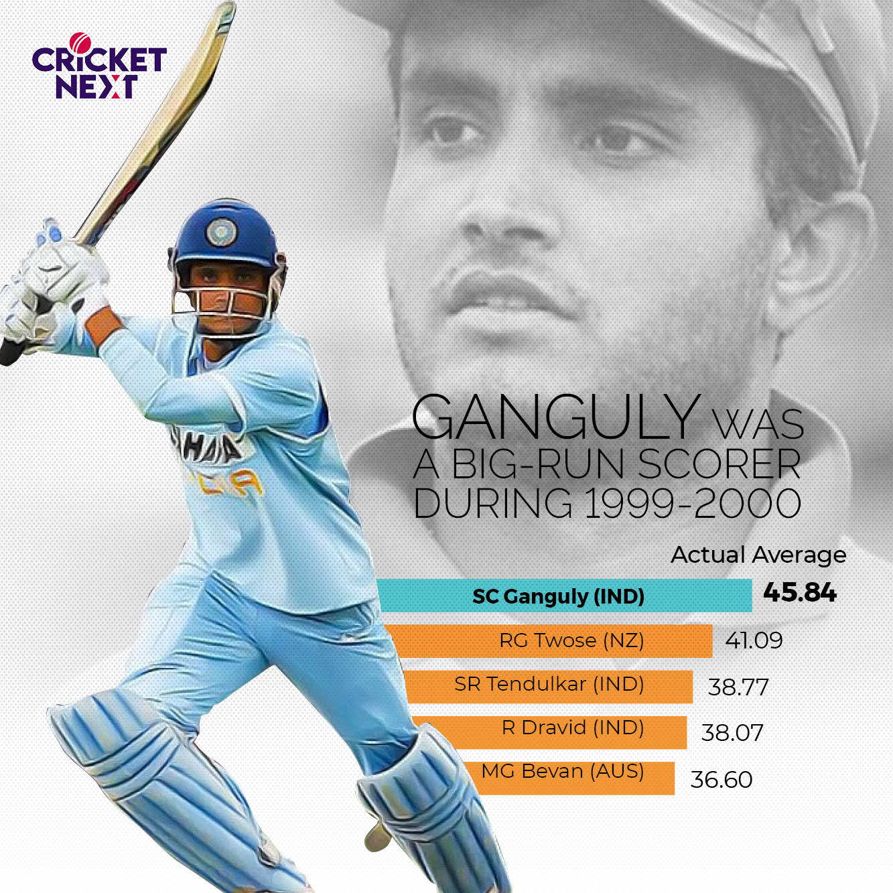
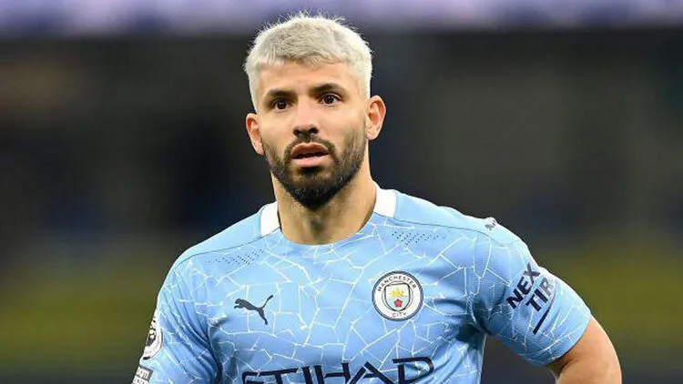
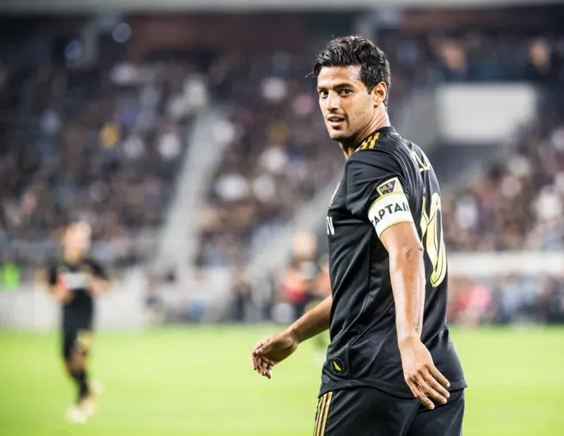
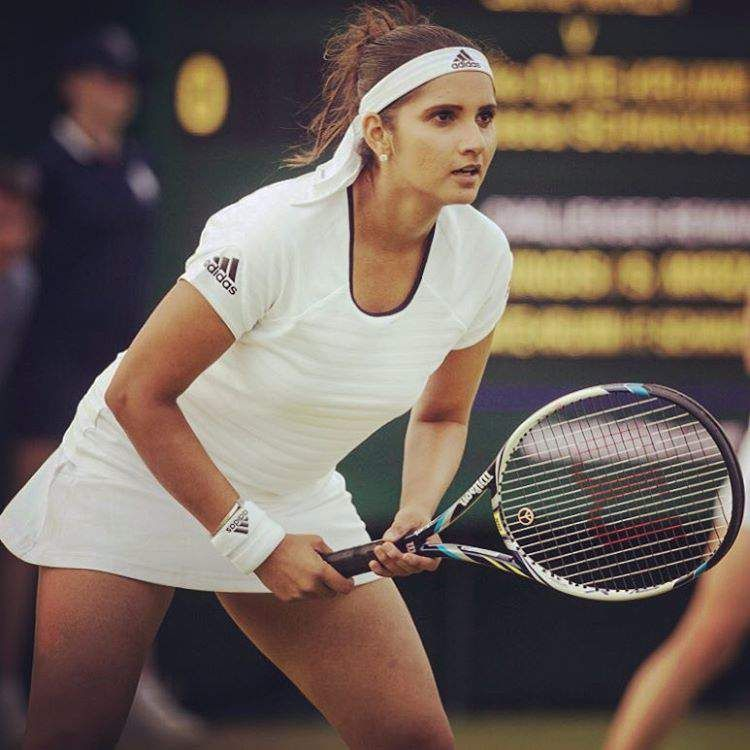
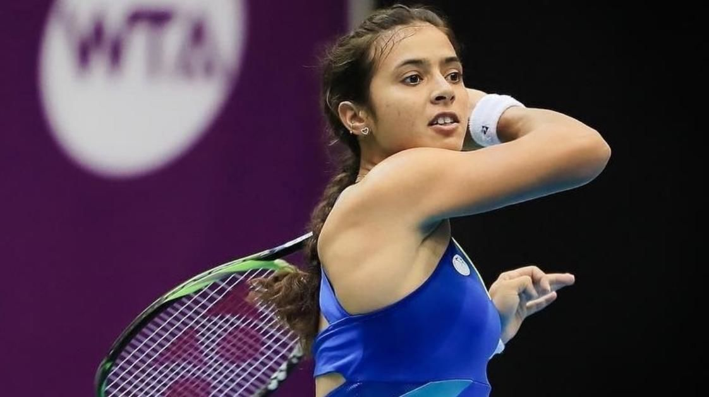
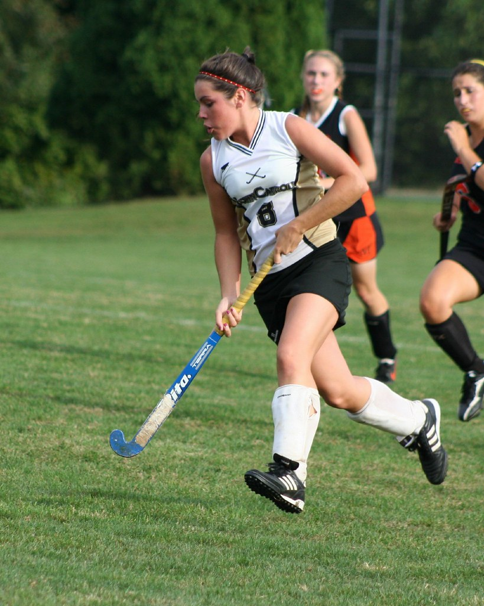
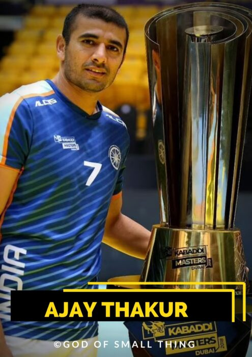
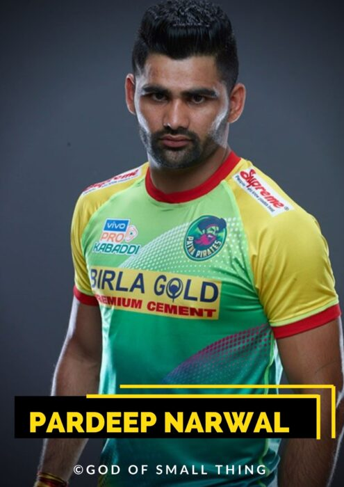

My Five Favourite Sports
Author of this page : Mr. Putchala Nagababu
Cricket

This exciting and fast-paced sport has a long history, dating back to the 13th century when it was first played on village greens and in fields across England. Today, cricket is especially popular in Australia and the United Kingdom , but people of all ages and from all corners of the world enjoy and participate in leagues and tournaments. Whether you are new to cricket or an experienced player, there are plenty of ways to get involved in this thrilling sport! There are many reasons why cricket has become so popular. For one thing, this game is incredibly dynamic, with batsmen running between the wickets and bowlers spinning the ball at high speeds. Additionally, cricket is a strategic game, with players having to make quick decisions on the fly in order to succeed. Cricket also has a strong social aspect that makes it so popular. This sport is often played as part of a team or community, bringing people together from all walks of life. Whether you are cheering for your local club or international team, there is something truly special about bonding over this beloved game.
Top Three Liked Players
- Sourav Ganguly
- Suresh Raina
- Rohit Sharma
 Sourav Ganguly: Personal Information Full Name:Sourav Chandidas Ganguly Age 49 years Birthday 8 July 1972 Birthplace Behala, Calcutta, West Bengal, India Education St. Xavier's College 13 more rows ... Nov 14 2022 Age: 49 years Birthday: 8 July 1972 Birthplace: Behala, Calcutta, West Bengal, India Full Name: Sourav Chandidas Ganguly To know more achievements click here.
 Suresh Kumar Raina was born in Muradnagar of Uttar Pradesh on 27 November 1986 into a Kashmiri Pandit family, to parents from Rainawari, Srinagar district of Jammu and Kashmir.[14][15] Raina lives in the Rajnagar neighborhood of Ghaziabad city. He has an older brother, Dinesh Raina.[16] He studied in a boarding school.
To know more achievements click here.
Suresh Kumar Raina was born in Muradnagar of Uttar Pradesh on 27 November 1986 into a Kashmiri Pandit family, to parents from Rainawari, Srinagar district of Jammu and Kashmir.[14][15] Raina lives in the Rajnagar neighborhood of Ghaziabad city. He has an older brother, Dinesh Raina.[16] He studied in a boarding school.
To know more achievements click here.
 Sharma was born on 30 April 1987 in Bansod, Nagpur, Maharashtra.[2] His mother, Purnima Sharma, is from Visakhapatnam, Andhra Pradesh.[3] His father, Gurunath Sharma, worked as a caretaker of a transport firm storehouse. Sharma was raised by his grandparents and uncles in Borivali because of his father's low income. He would visit his parents, who lived in a single-room house in Dombivli, only during weekends.[4] He has a younger brother, Vishal Sharma.[5]
Sharma joined a cricket camp in 1999 with his uncle's money. Dinesh Lad, his coach at the camp, asked him to change his school to Swami Vivekanand International School, where Lad was the coach and the cricket facilities were better than those at Sharma’s old school. Sharma recollects, "I told him I couldn't afford it, but he got me a scholarship. So for four years I didn't pay a penny, and did well in my cricket".[5] Sharma started as an off-spinner who could bat a bit before Lad noticed his batting ability and promoted him from number eight to open the innings. He excelled in the Harris and Giles Shield school cricket tournaments, scoring a century on debut as an opener.
To know more achievements click here.
Sharma was born on 30 April 1987 in Bansod, Nagpur, Maharashtra.[2] His mother, Purnima Sharma, is from Visakhapatnam, Andhra Pradesh.[3] His father, Gurunath Sharma, worked as a caretaker of a transport firm storehouse. Sharma was raised by his grandparents and uncles in Borivali because of his father's low income. He would visit his parents, who lived in a single-room house in Dombivli, only during weekends.[4] He has a younger brother, Vishal Sharma.[5]
Sharma joined a cricket camp in 1999 with his uncle's money. Dinesh Lad, his coach at the camp, asked him to change his school to Swami Vivekanand International School, where Lad was the coach and the cricket facilities were better than those at Sharma’s old school. Sharma recollects, "I told him I couldn't afford it, but he got me a scholarship. So for four years I didn't pay a penny, and did well in my cricket".[5] Sharma started as an off-spinner who could bat a bit before Lad noticed his batting ability and promoted him from number eight to open the innings. He excelled in the Harris and Giles Shield school cricket tournaments, scoring a century on debut as an opener.
To know more achievements click here.
Football

Soccer is one of the most popular sports in the world, with over 3.5 billion fans around the globe. Known as football in many parts of the world, this exciting sport has gained a huge following due to its thrilling gameplay and fast-paced action. Whether you are a casual spectator or an avid player, there is no denying that soccer is one of the greatest sports out there. Soccer originated over 3000 years ago when it was first played by the Aztecs. They called it Tchatali and played with a rock for a ball. In the 2nd and 3rd centuries BCE, the first ball game, called Cuju, took place in China. They played with a leather ball filled with feathers. In ancient Greece and Rome, ball games were also played, however, not at the Panhellenic Games or in amphitheaters. Over time, it evolved into its current form and became popular all over Europe before spreading to other parts of the world. Today, millions of people enjoy watching soccer games and playing them on a regular basis. So why is soccer so popular? There are many factors that contribute to its continued success, including its speed and unpredictable outcomes. This leads to exciting and tense games that keep fans on the edge of their seats. In addition, soccer is also a very social sport, with spectators gathering together in stadiums and bars to cheer on their favorite teams.
Top Two Liked Players
- Sergio-Aguero
- Carlos-Vela
 Sergio Leonel Agüero del Castillo,Date of birth:Jun 2, 1988,Place of birth:Quilmes, Argentina,Age:34,Height:1,73 m, Citizenship:Argentina Spain Position: Attack - Centre-Forward,Foot:right Player agent:Eleven Talent Group Retired and Joined:Dec 15, 2021 To know more achievements click here.
Carlos Alberto Vela Garrido (born 1 March 1989) is a Mexican professional footballer who captains and plays for Major League Soccer club Los Angeles FC. Described as a versatile player who can play as a forward, winger, and attacking midfielder, he is known for being a creative player and prolific scorer To know more achievements click here.
Tennis
Known for its fast-paced action and high-stakes competition, tennis is a favorite among people of all ages and backgrounds. Whether you are an avid player or just enjoy watching from the sidelines, there are many reasons why tennis is such a treasured sport. One of the main reasons that tennis has become so popular over the years is that it is an accessible sport that people of all ages and abilities can enjoy. Unlike some other competitive sports, which require costly equipment or extensive training, all you need to play tennis is a racket and a ball. Additionally, there are countless public courts available in cities around the world, making it easy for people to find a place to play. Another reason why tennis is so beloved is that it is competitive. From the grand slams like Wimbledon and the US Open to local club championships and high school tournaments, there are countless opportunities for athletes of all ages and abilities to compete against each other. Whether you are playing singles or doubles, going up against your opponents can be an exhilarating experience that pushes you to perform your best.
Top Two Liked Players
- Sania Mirza
- Anikita Raina
 Sania Mirza (ˈsaːnɪja ˈmɪrza; born 15 November 1986) is an Indian professional tennis player. A former doubles world No. 1, she has won six major titles-three in women's doubles and three in mixed doubles.From 2003 until her retirement from singles in 2013, she was ranked by the Women's Tennis Association as the Indian No. 1 in singles.[5][6] Throughout her career, Mirza has established herself as one of the most well-known,[7] highest-paid,[8] and influential[9] athletes in India. to know more achievements click here.
 Ankita Ravinderkrishan Raina (born 11 January 1993)[2] is an Indian professional tennis player. Since 2013, she has regularly been the Indian number one in both singles and doubles. Raina has won one title on the WTA Tour and one at WTA 125 tournaments (both in doubles), along with 11 singles and 22 doubles titles on the ITF Circuit. In April 2018, she entered the top 200 singles rankings for the first time, becoming only the fifth player representing India to achieve this feat.[3][4] Raina has also won gold medals in the women's singles and mixed-doubles events at the 2016 South Asian Games, and won a bronze medal in singles at the 2018 Asian Games. Raina is one of only two women representing India who has won a WTA-level title.Playing for India Fed Cup team, Raina has a win–loss record of 26–21.[5] She has notable wins over 2011 US Open champion Samantha Stosur,[6] Wimbledon finalist Sabine Lisicki and former world No. 5 Sara Errani To know more achievements click here.
Hockey

This fast-paced, action-packed sport requires a lot of skill and precision but can be fun for both players and spectators. The origins of hockeydate back to the 18th century in England. Over time, different variations of the sport developed as people played their own versions of the game. Some notable examples include field hockey (played on grass or turf fields), street hockey (played on asphalt or concrete), and roller hockey (played on roller skates). Ice hockey originated in Canada and was quickly adopted around the world as the predominant form of this sport. So how exactly is hockey played? Well, it can vary depending on the type of hockey. For instance, in field hockey players use curved sticks to hit a small ball into their opponent's goal. Ice hockey players do the same thing. They use sticks to hit a puck but play on an ice rink instead of a field and wear skates rather than cleats. Street and roller hockey are also fairly similar. Both involve hitting a puck with sticks and playing on surfaces like asphalt or cement rather than grass or turf. Despite its popularity across the globe, there are still some people who do not know much about this beloved sport. If you are one of them, then now is the perfect time to learn more about hockey and all that it has to offer. Whether you are a long-time fan or discovering it for the first time, there is no better way to spend your free time than by tuning in to watch some high-quality hockey games!
Top Two Liked Players
- wayne Gretzky
-
boby_orr
 Robert Gordon Orr OC (born March 20, 1948) is a Canadian former professional ice hockey player, widely acknowledged as one of the greatest of all time.[1] Orr used his ice skating speed, scoring, and play-making abilities to revolutionize the position of defenceman.[2] He played in the National Hockey League (NHL) for 12 seasons, the first 10 with the Boston Bruins, followed by two with the Chicago Black Hawks. Orr remains the only defenceman to have won the league scoring title with two Art Ross Trophies. He holds the record for most points and assists in a single season by a defenceman. Orr won a record eight consecutive Norris Trophies as the NHL's best defenceman and three consecutive Hart Trophies as the league's most valuable player (MVP). Orr was inducted into the Hockey Hall of Fame in 1979 at age 31.
To know more achievements click here.
Robert Gordon Orr OC (born March 20, 1948) is a Canadian former professional ice hockey player, widely acknowledged as one of the greatest of all time.[1] Orr used his ice skating speed, scoring, and play-making abilities to revolutionize the position of defenceman.[2] He played in the National Hockey League (NHL) for 12 seasons, the first 10 with the Boston Bruins, followed by two with the Chicago Black Hawks. Orr remains the only defenceman to have won the league scoring title with two Art Ross Trophies. He holds the record for most points and assists in a single season by a defenceman. Orr won a record eight consecutive Norris Trophies as the NHL's best defenceman and three consecutive Hart Trophies as the league's most valuable player (MVP). Orr was inducted into the Hockey Hall of Fame in 1979 at age 31.
To know more achievements click here.
 Wayne Douglas Gretzky CC (/ˈɡrɛtski/ GRET-skee; born January 26, 1961) is a Canadian former professional ice hockey player and former head coach. He played 20 seasons in the National Hockey League (NHL) for four teams from 1979 to 1999. Nicknamed "the Great One",[1] he has been called the greatest hockey player ever by many sportswriters, players, the NHL itself,[2] and by The Hockey News, based on extensive surveys of hockey writers, ex-players, general managers and coaches.[3] Gretzky is the leading goal scorer, assist producer and point scorer in NHL history,[4] and has more assists in his career than any other player scored total points. He is the only NHL player to total over 200 points in one season, a feat he accomplished four times. In addition, Gretzky tallied over 100 points in 16 professional seasons, 14 of them consecutive. At the time of his retirement in 1999, he held 61 NHL records: 40 regular season records, 15 playoff records, and 6 All-Star records To know more achievements click herre.
Wayne Douglas Gretzky CC (/ˈɡrɛtski/ GRET-skee; born January 26, 1961) is a Canadian former professional ice hockey player and former head coach. He played 20 seasons in the National Hockey League (NHL) for four teams from 1979 to 1999. Nicknamed "the Great One",[1] he has been called the greatest hockey player ever by many sportswriters, players, the NHL itself,[2] and by The Hockey News, based on extensive surveys of hockey writers, ex-players, general managers and coaches.[3] Gretzky is the leading goal scorer, assist producer and point scorer in NHL history,[4] and has more assists in his career than any other player scored total points. He is the only NHL player to total over 200 points in one season, a feat he accomplished four times. In addition, Gretzky tallied over 100 points in 16 professional seasons, 14 of them consecutive. At the time of his retirement in 1999, he held 61 NHL records: 40 regular season records, 15 playoff records, and 6 All-Star records To know more achievements click herre.
Kabbadi

Kabaddi is a contact team sport.Played between two teams of seven players, the objective of the game is for a single player on offence, referred to as a "raider", to run into the opposing team's half of a court, touch out as many of their defenders as possible, and return to their own half of the court, all without being tackled by the defenders, and in a single breath. Points are scored for each player tagged by the raider, while the opposing team earns a point for stopping the raider. Players are taken out of the game if they are touched or tackled, but are brought back in for each point scored by their team from a tag or tackle. To know more To know more achievements click here
Top Two Liked Players
- Ajay-thakur
- Pardeep-Narwal
 Ajay Thakur (born 1 May 1986) is an Indian professional Kabaddi player and the former captain of the Indian National Kabaddi Team. He was part of the national teams which won 2016 Kabaddi World Cup and gold medal at 2014 Asian Games. He was awarded the Padma Shri and Arjuna Award in 2019.He is a member of Himachal Pradesh Police Service cadre who currently serves as Deputy superintendent of police. To know more achievements click here
Pardeep Narwal (born 16 February 1996) is an Indian kabaddi player who currently plays for the UP Yoddha in VIVO Pro Kabaddi League and the Indian National Kabaddi team. He led the Patna Pirates to three straight VIVO Pro Kabaddi titles and holds a multitude of the league's raiding records.
To know more achievements click here.